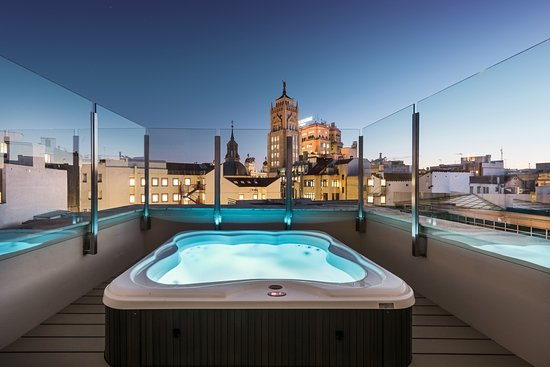

Hotels

Hotels en madrid
Riu plaza Espana Bien situado en el centro de Madrid. Ayre gran hotel colon se encuentra a 700 metros del Parque del Retiro. Hotel nuevo madrid este elegante hotel se encuentra al norte de la ciudad. Estos son algunos hoteles en Madrid.
Reserva tu hotel